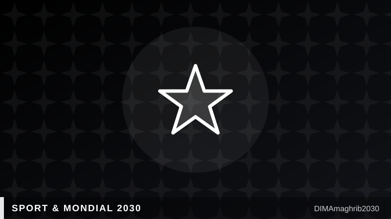

Les Lions de l'Atlas entrent dans l'histoire : premiers Africains en quarts de finale consécutifsAtlas Lions Make History: First African Team to Reach Consecutive World Cup Quarterfinals

Il n'aura fallu qu'un coup de sifflet, à Boston, pour refermer un rêve — mais pas pour l'effacer. Le 9 juillet, la France a dompté le Maroc 2-0 en quart de finale de la Coupe du Monde 2026, Kylian Mbappé se chargeant de l'essentiel après avoir manqué un penalty : un but, une passe décisive, avant qu'Ousmane Dembélé ne scelle le score. Les statistiques, elles, racontent un match à sens quasi unique : 3,04 buts attendus (xG) côté français contre seulement 0,14 pour les Lions de l'Atlas, selon les données relayées par ESPN et NPR. Sur le papier, une soirée cruelle. Dans les mémoires, une autre page qui s'ajoute à une épopée devenue chapitre officiel de l'histoire du football africain.
Car au-delà du score, c'est une statistique inédite que le Maroc inscrit définitivement au palmarès du continent : selon Yahoo Sports, les Lions de l'Atlas sont devenus la toute première nation africaine à atteindre les quarts de finale d'une Coupe du Monde lors de deux éditions consécutives — Qatar 2022 et désormais 2026. Aucune autre sélection du continent n'avait jusqu'ici réussi à transformer un exploit historique en habitude. Le Maroc, lui, vient de faire de la performance une méthode.
Dernier représentant africain, jusqu'au bout
Le parcours 2026 a une nouvelle fois confirmé le statut particulier du Maroc sur la scène mondiale. Les hommes en rouge ont été la dernière équipe africaine encore en lice dans le tournoi, éliminant les Pays-Bas aux tirs au but et allant chercher un match nul face au Brésil sur la route vers les quarts, rappelle Olympics.com. Une trajectoire qui, sans offrir la même demi-finale historique qu'au Qatar, confirme que le Mondial 2022 n'était pas un accident de parcours mais l'amorce d'un cycle.
Et c'est peut-être cela, plus que le résultat du 9 juillet, qui explique l'ambiance dans le pays au lendemain de l'élimination. Selon Yahoo Sports, les supporters marocains n'ont exprimé que "peu d'amertume" — davantage de fierté que de regret, pour une équipe qui a, une fois de plus, capté l'imagination de toute une nation. Maroc-France 2026 restera comme un quart de finale perdu sur le terrain, mais gagné dans l'histoire collective.
La FRMF ouvre déjà le chantier stratégique du Mondial 2030
La Fédération Royale Marocaine de Football n'a pas attendu longtemps pour tourner la page. Réuni le 16 juillet, soit une semaine à peine après l'élimination de Boston, le Comité Directeur de la FRMF a qualifié l'organisation de la Coupe du Monde 2030 de "chantier stratégique" national, rapporte Le Brief. Un choix de mots qui n'a rien d'anodin : il s'agit de faire de l'accueil du Mondial 2030 — coorganisé avec l'Espagne et le Portugal — un projet d'ampleur nationale, appelant à une mobilisation collective de toutes les forces vives du pays.
L'équation est limpide pour les dirigeants du football marocain : après deux quarts de finale consécutifs, un statut de première nation africaine à réaliser un tel doublé, et un vivier de jeunes talents qui a impressionné jusqu'aux États-Unis, le Maroc n'a plus seulement l'ambition de bien recevoir le monde en 2030 — il a l'ambition d'y briller sur le terrain. Le chantier stratégique du Mondial 2030 ne sera donc pas qu'une affaire de stades et d'infrastructures : ce sera aussi celui d'une génération de Lions de l'Atlas qui refuse de considérer l'histoire déjà écrite.
It took just one final whistle in Boston to close a dream — but not to erase it. On July 9, France dispatched Morocco 2-0 in the World Cup 2026 quarterfinal, with Kylian Mbappé doing most of the damage after missing a penalty: a goal, an assist, before Ousmane Dembélé sealed the result. The numbers tell an even more lopsided story: France racked up 3.04 expected goals (xG) to Morocco's mere 0.14, according to data cited by ESPN and NPR. On paper, a brutal night. In memory, another page added to a saga that has now become an official chapter in African football history.
Because beyond the scoreline, Morocco has permanently etched an unprecedented statistic into the continent's record book. Per Yahoo Sports, the Atlas Lions became the first African nation ever to reach World Cup quarterfinals in consecutive editions — Qatar 2022 and now 2026. No other African side had managed to turn a historic breakthrough into a habit. Morocco just made excellence a pattern.
The Last African Standing, Once Again
Morocco's 2026 run reaffirmed the country's singular status on the world stage. The Atlas Lions were the last African team left in the tournament, having knocked out the Netherlands on penalties and drawn with Brazil on their way to the last eight, according to Olympics.com. It wasn't quite a repeat of Qatar's historic semifinal run, but the message was unmistakable: 2022 wasn't a fluke — it was the opening chapter of a cycle.
And that, perhaps more than the July 9 scoreline, explains the mood back home in the tournament's aftermath. Yahoo Sports described fans expressing "little bitterness" — more pride than regret for a team that had once again captured the country's imagination. Morocco vs. France 2026 will be remembered as a quarterfinal lost on the pitch, but won in the collective story of a nation.
FRMF Opens the Strategic Construction Site for 2030
Morocco's football federation wasted little time turning the page. Meeting on July 16 — barely a week after the elimination in Boston — the FRMF's Comité Directeur (Executive Committee) formally labeled the organization of the 2030 World Cup a "chantier stratégique," or strategic construction site, according to Le Brief. The phrase was deliberate: hosting the 2030 tournament, co-organized with Spain and Portugal, is being framed as a project of national scale, one requiring what the federation called collective mobilization across the country.
For Moroccan football officials, the logic is straightforward. After back-to-back quarterfinals, the distinction of being the first African nation to pull off that double, and a pipeline of young talent that impressed audiences as far away as the United States, Morocco's ambitions for 2030 no longer stop at being a gracious host — they extend to competing on the pitch. The FRMF Mondial 2030 construction site, in other words, won't just be about stadiums and infrastructure. It will be about a generation of Atlas Lions unwilling to treat their history as already written.